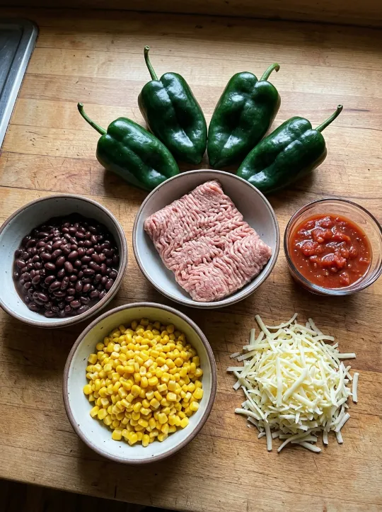
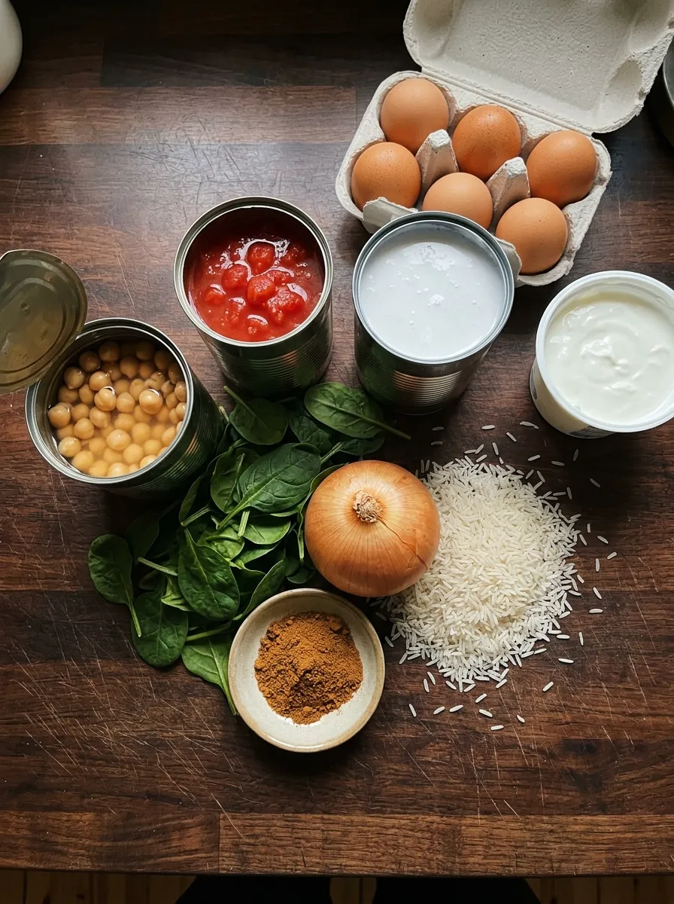
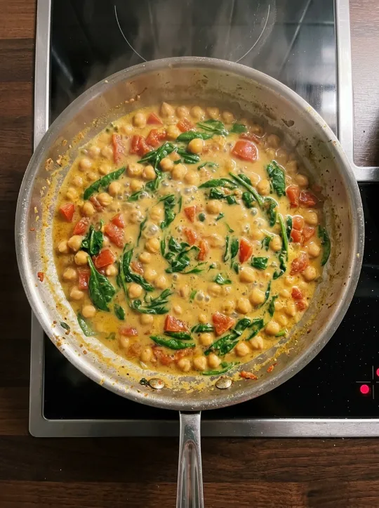
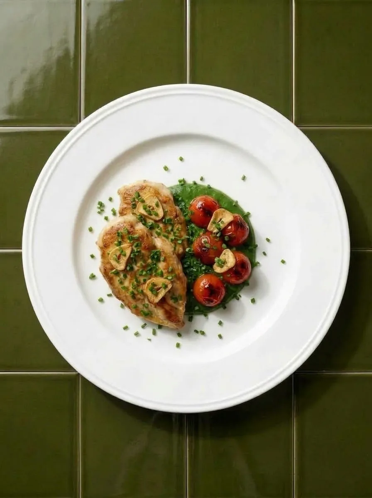
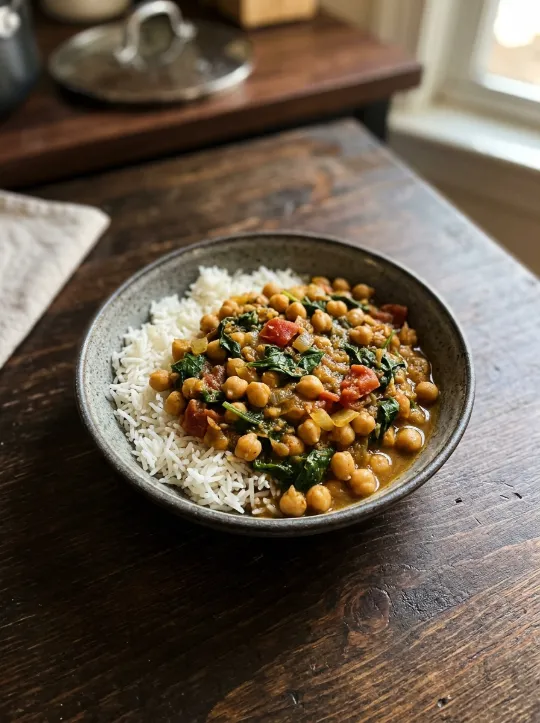

Start with your ingredients
Photograph the fridge, pantry, or counter—or enter the list yourself.
Dinner, rescued
Turn what is already in your kitchen into a practical recipe—or Chef It Up with elevated techniques, guided plating, and an optional dish visual.

How it works

Photograph the fridge, pantry, or counter—or enter the list yourself.

Confirm the list, then choose servings, time, effort, cleanup, and recipe style.

Follow focused cooking steps, then switch into a distinct plating phase.
Built for real kitchens
Nibble works with tonight's reality. Choose one, two, or three recipes and decide whether they should be practical or ready to Chef It Up.

Made with Nibble
Chef Mode · Plate It
Chef Mode stays grounded in the ingredients you confirmed, but gives the dish stronger technique, intentional components, finishing touches, and a plate you can realistically build at home.
Choose Chef It Up before generation or elevate an everyday recipe later.
Cooking and presentation stay separate, so each phase remains easy to follow.
Use short plating actions and an optional AI-generated final-dish visual.

The quiet details
No filler recipes just to hit a number.
One step at a time, with timers where they matter.
No account. Saved recipes and preferences stay on your device.
Good to know
Nibble turns the ingredients you already have into recipes. Photograph your fridge, pantry, or counter—or type the list—confirm what Nibble found, then choose servings, time, effort, and cleanup.
No. Open Nibble and start cooking. Saved recipes and preferences stay on your device. The privacy policy explains what the service processes.
A new installation includes three free recipe credits. Each generated meal uses one; photo analysis, saved recipes, and cooking do not. Nibble Plus adds unlimited recipe generation.
Chef Mode creates a more elevated version of a dish from the same ingredients, with dedicated cooking and plating steps. Choose Chef It Up before generating, or elevate an everyday recipe later.
Add, rename, or remove ingredients on the review screen before generating. Only the list you confirm is used.
Nibble Plus
Weekly Plus includes 5 Chef images per subscription period; Monthly Plus includes 20. Need more? One-time image packs add non-expiring credits. Prices and renewal terms appear before purchase.